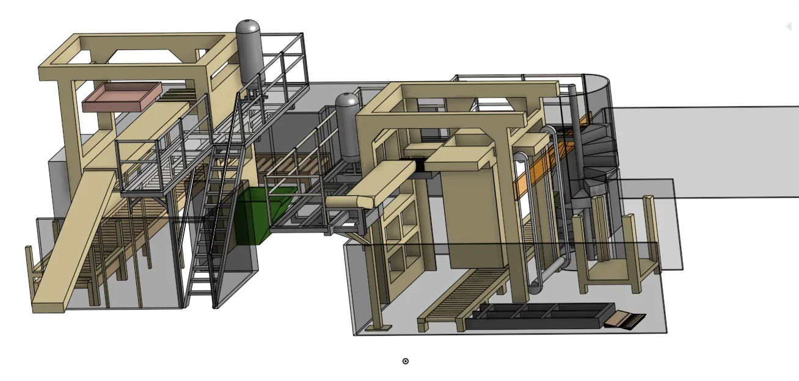
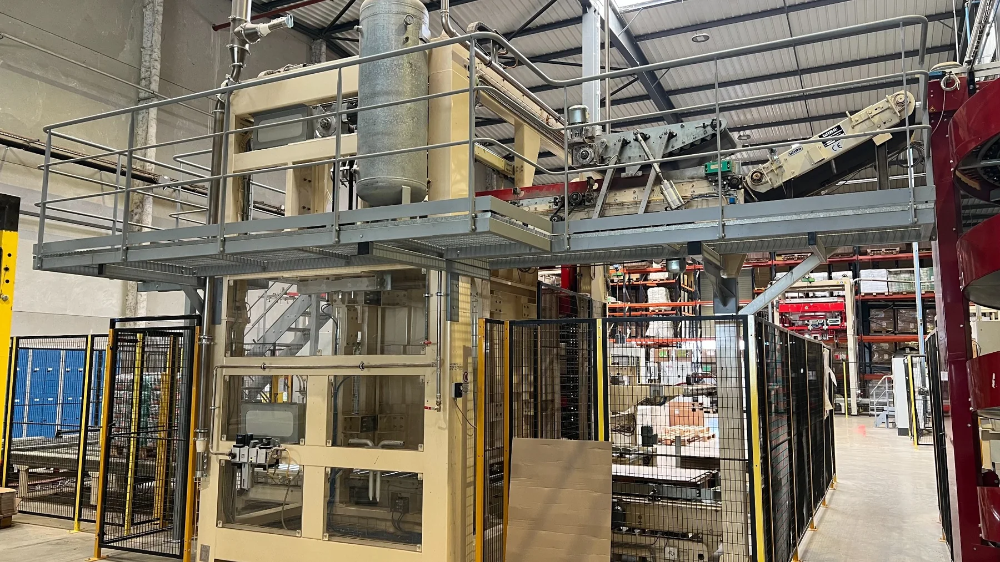
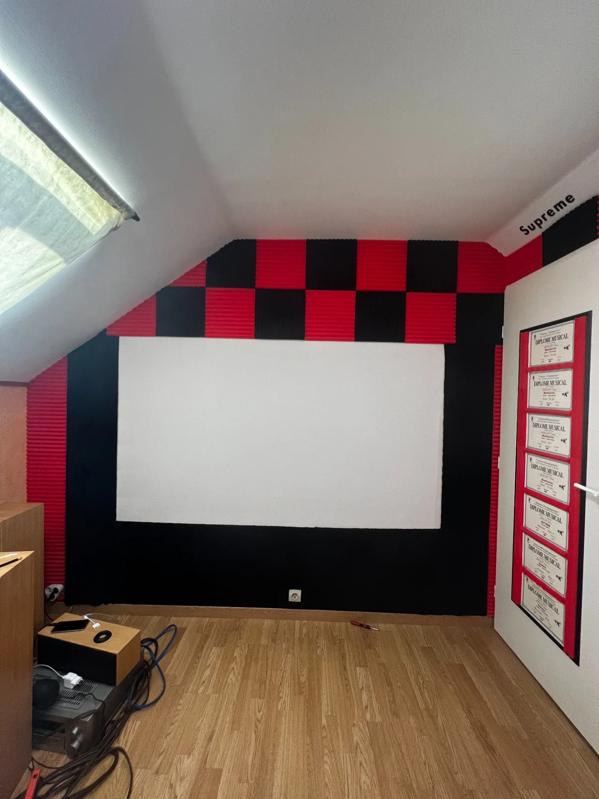
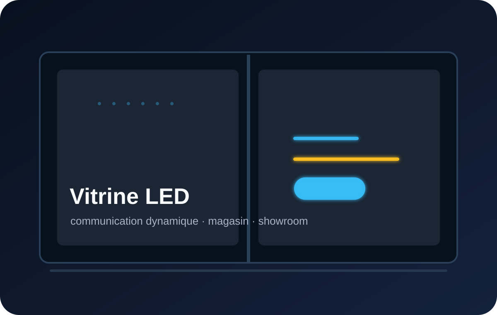

Diagnostic terrain
Observation, photos, chronométrage, repérage des pertes et des irritants quotidiens.
Process
Process aide les structures à gagner en efficacité : analyse des flux, réduction des temps de changement, conception d’aménagements, modélisation CAO, mise en plan et création d’outils simples pour suivre l’activité.

Méthode
Une amélioration utile commence par la compréhension du fonctionnement réel : qui utilise l’installation, quels déplacements sont inutiles, quelles informations manquent, quels réglages prennent du temps et quelles contraintes bloquent l’exploitation.
Observation, photos, chronométrage, repérage des pertes et des irritants quotidiens.
Analyse des circulations, stocks, zones d’attente, postes et enchaînements de tâches.
Modélisation de plateformes, supports, aménagements ou solutions techniques avant réalisation.
Excel, Google Sheets, checklists, indicateurs, tableaux de bord et automatisations simples.
Réduction des temps
La méthode SMED permet de réduire les temps de changement en séparant ce qui peut être préparé avant l’arrêt, ce qui doit être standardisé et ce qui peut être simplifié ou automatisé.

Les actions sont classées par priorité, coût, faisabilité, responsable et prochaine étape. Le but est de passer d’un constat terrain à un plan d’actions lançable.

CAO & mise en plan
Les projets peuvent être préparés par prises de cotes, modélisation 3D, vérification d’encombrement, implantation dans l’environnement existant et mise en plan pour faciliter l’échange avec la maintenance, les fournisseurs ou les décideurs.
Implantation réelle
L’objectif n’est pas de produire une belle 3D isolée, mais une solution qui respecte les contraintes d’accès, de sécurité, de maintenance, de circulation et d’utilisation réelle.

Aménagements & lieux
Process peut aussi intervenir sur l’aménagement de lieux professionnels ou événementiels : circulation, implantation de matériel, remplacement d’éléments, intégration audiovisuelle, supports spécifiques, signalétique ou dispositifs de communication visuelle.

Réorganisation, intégration audio/vidéo, amélioration du rendu et remplacement d’éléments existants.

Étude d’intégration possible pour vitrines, magasins, showrooms ou lieux recevant du public.

Amélioration, remplacement ou préparation d’éléments spécifiques lorsque le standard n’est pas adapté.
Outils
Structurer les entrées, sorties, références, niveaux d’alerte et indicateurs essentiels.
Créer des tableaux simples pour suivre les clients, montants, statuts et relances.
Standardiser les opérations et éviter les oublis lors de changements ou interventions.
Gagner du temps sur les tâches répétitives : synthèses, préremplissages, alertes et modèles.
Process
Un échange permet d’identifier si le besoin relève d’un diagnostic terrain, d’une étude CAO, d’un outil de suivi ou d’une solution d’aménagement.
Présenter le contexte